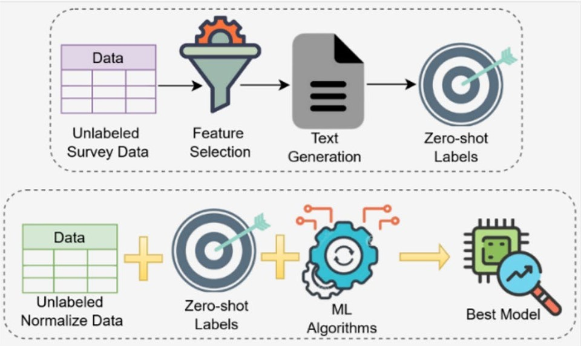
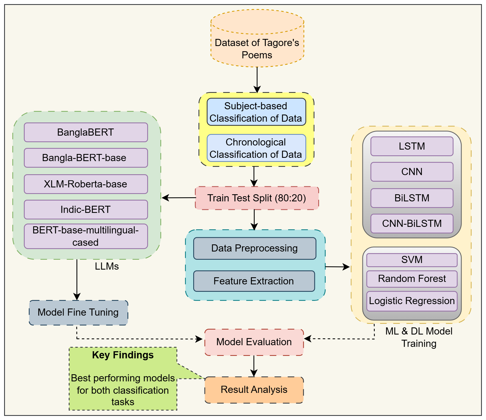
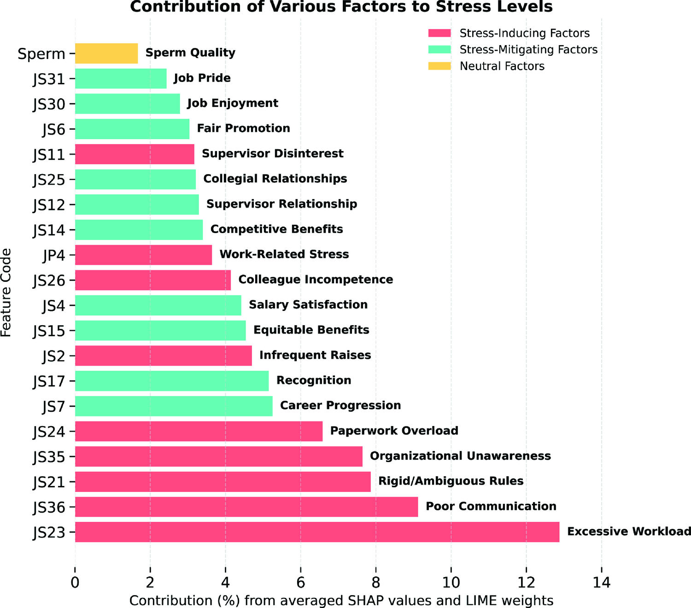
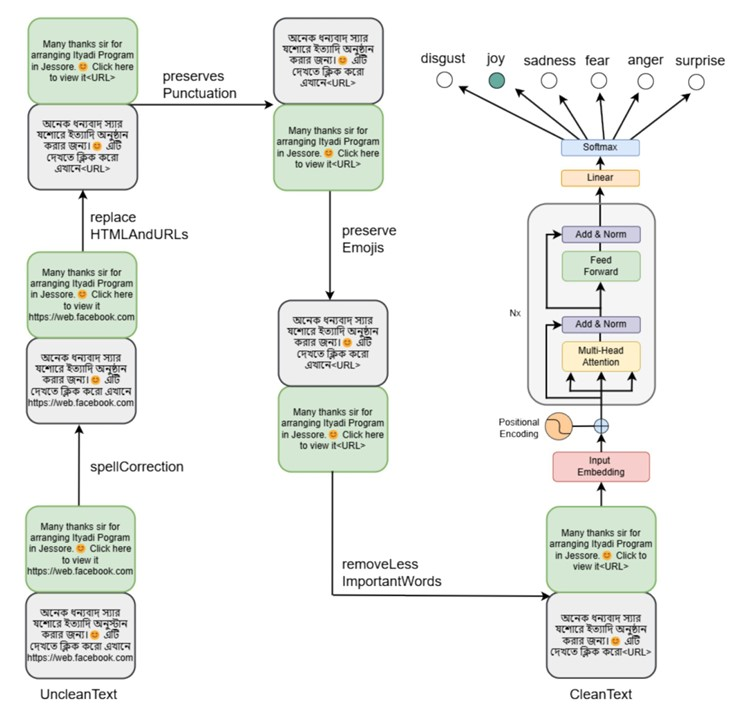
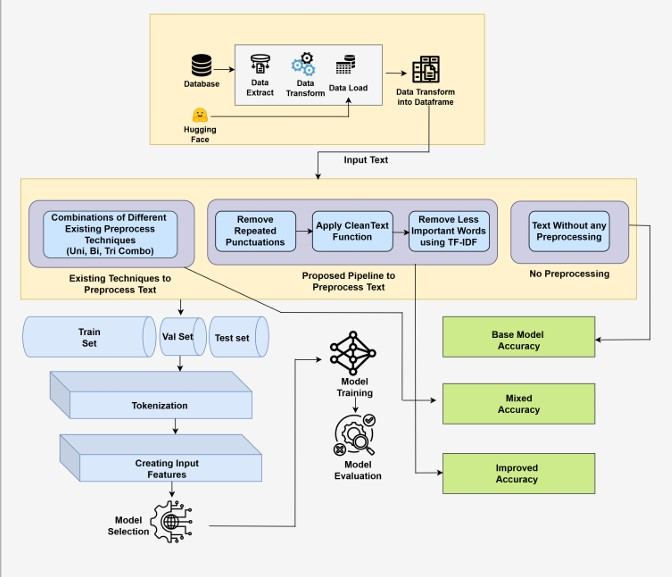

Best Paper Award
12th International IEEE Conference on Intelligent Systems, 2024
For developing an efficient text cleaning pipeline for clinical texts for transformer encoder models.
Computer Science Researcher | Machine Learning, NLP & Healthcare AI
Email / CV / Google Scholar / GitHub / LinkedIn
I am a Computer Science researcher working at the intersection of machine learning, natural language processing, and healthcare AI. I am particularly interested in developing reliable, efficient, and data-driven computational methods for real-world healthcare problems.
I completed my B.S. in Computer Science and Engineering at North South University, where I conducted undergraduate research and worked as an Undergraduate Teaching Assistant. I currently work as a Research Assistant at the ELITE Research Lab and as a Lab Instructor at North South University.
My research experience spans machine learning, NLP, transformer-based models, clinical text processing, and healthcare applications. I am particularly interested in resource-efficient AI, reliable machine learning, and intelligent systems that can support healthcare delivery and decision-making. I am seeking PhD opportunities for Fall 2027 where I can pursue research in these areas.
Machine Learning for Healthcare
Developing efficient, reliable, and data-driven machine learning approaches for healthcare applications, with an emphasis on practical computational methods that can support healthcare delivery and decision-making.

Science
Science
2025';">
Science
2024B.S. in Computer Science and Engineering
North South University, Dhaka, Bangladesh
Undergraduate research and teaching experience in computer science, with research interests spanning machine learning, natural language processing, and healthcare AI.
Best Paper Award
12th International IEEE Conference on Intelligent Systems, 2024
For developing an efficient text cleaning pipeline for clinical texts for transformer encoder models.
Short Course on Data Science
By Dr. Jennifer Widom, Professor and Dean
School of Engineering, Stanford University
Research Assistant
ELITE Research Lab
Research planning & methodology, paper writing, mentoring junior researchers
Lab Instructor
North South University, Dhaka, Bangladesh
Programming Language I Lab · Microprocessor Interfacing and Embedded Systems Lab · Database Systems Lab
Graduate Teaching Assistant
North South University, Dhaka, Bangladesh
Machine Learning
Undergraduate Teaching Assistant
North South University, Dhaka, Bangladesh
Microprocessor Interfacing & Embedded System · Computer Organization and Architecture